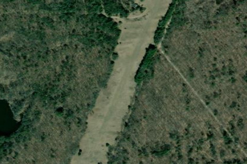

Chambers Island, WI

Aerial imagery source: Esri, Vantor, Earthstar Geographics, and the GIS User Community
| CTAF | 122.9 |
|---|---|
| Coordinates | 45.192562, -87.359333 |
Notes
[shortfield] Location Overview The airstrip sits on Chambers Island, a roughly 3,200-acre island in Door County, Wisconsin, located a few miles northwest of the mainland village of Fish Creek. The island has no commercial electricity and is largely off the grid, with a small number of seasonal homes, two unpaved roads maintained by the local township, and dense forest covering much of the interior. Access to the island can also be gained by use of the grass airstrip, in addition to the public boat launch and private boats, charters, and barges islanders rely on for transportation. Camping & Recreation There are no developed campgrounds or visitor services directly at the airstrip, and overnight lodging on the island in general is very limited since it has no hotels, stores, or commercial infrastructure. That said, the island itself offers plenty to see: it has an interior lake (Mackaysee Lake, unusual for containing its own two "island-in-a-lake-in-an-island" landforms), hiking and biking trails, beaches, and a historic lighthouse. Visitors arriving by air or boat can explore these features, though anyone hoping to camp or stay overnight should plan carefully given the lack of amenities, and nearby Door County (Fish Creek and surrounding areas) has more conventional campgrounds for those who want a base off the island. Notes & Warnings The strip is a grass/turf runway, so pilots should expect a soft-field type surface and check current conditions before landing, especially after rain. The island is surrounded by open, often choppy water, with nearby shoals and submerged rocks that are more of a concern for boaters than pilots, but they underscore how isolated the location is — there's no easy alternate landing spot nearby if weather turns. Given the island's remoteness, pilots should also plan for minimal to no services (fuel, maintenance, or ground support) on site and treat any flight there as a self-sufficient trip. History Chambers Island itself has a history dating to the early 1800s: it was named for Colonel Talbot Chambers, whose expedition sailed through the area in 1816 en route to establishing a military post at Green Bay. The first permanent settler was Stephen A. Hoag, followed soon after by Nathaniel Brooks, who reportedly called it "a perfect paradise," and a small settlement grew in the 1850s, initially built around shipbuilding thanks to the island's abundant pine, oak, and hemlock. The grass airstrip itself came much later, developed as a practical way for islanders and visitors to reach this otherwise boat-and-barge-dependent community, and it remains one of only a couple of ways on or off the island alongside the East Dock boat launch and private charter or barge service from the mainland.